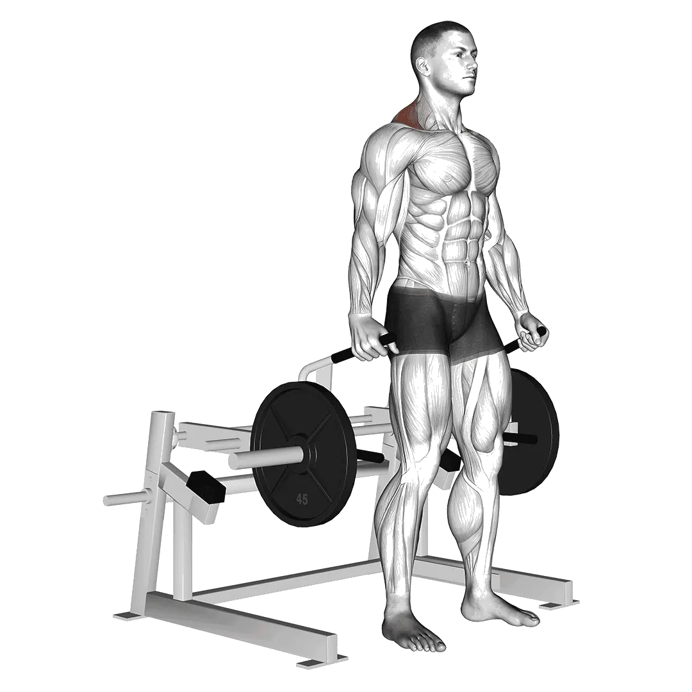

中级平均重量
一般中级训练者的参考值。
男性
92 kg
女性
42 kg
器械耸肩平均重量 [1RM]
| 等级 | ||
|---|---|---|
| 初学者 | 35 kg | 10 kg |
| 初级者 | 59 kg | 23 kg |
| 中级者 | 92 kg | 42 kg |
| 进阶者 | 132 kg | 67 kg |
| 菁英 | 177 kg | 96 kg |
注：这些标准是以一般训练者的 1RM 为基准估算。体重、年龄等个人因素都可能造成差异。详细数据请参考下方表格。
你的当前位置
计算器械耸肩估算 1RM 与等级
根据实际重量与次数估算 1RM，并与体重标准比较。
判断结果
用 Shiba 记录器械耸肩
估算结果仅供参考，动作姿势、活动范围和疲劳都会影响结果。 查看计算方式
器械耸肩力量标准(kg)
男性按体重(kg)数据 [1RM]
| 体重 | 初学者 | 初级者 | 中级者 | 进阶者 | 菁英 |
|---|---|---|---|---|---|
| 50 | 15 | 31 | 53 | 80 | 112 |
| 55 | 19 | 36 | 60 | 89 | 122 |
| 60 | 23 | 42 | 66 | 97 | 132 |
| 65 | 27 | 47 | 73 | 105 | 141 |
| 70 | 31 | 52 | 79 | 112 | 150 |
| 75 | 35 | 57 | 85 | 120 | 158 |
| 80 | 39 | 62 | 91 | 127 | 166 |
| 85 | 43 | 66 | 97 | 133 | 174 |
| 90 | 46 | 71 | 103 | 140 | 181 |
| 95 | 50 | 76 | 108 | 146 | 188 |
| 100 | 54 | 80 | 113 | 152 | 195 |
| 105 | 57 | 84 | 118 | 158 | 202 |
| 110 | 61 | 89 | 123 | 164 | 208 |
| 115 | 64 | 93 | 128 | 170 | 215 |
| 120 | 67 | 97 | 133 | 175 | 221 |
| 125 | 71 | 101 | 138 | 181 | 227 |
| 130 | 74 | 105 | 142 | 186 | 233 |
| 135 | 77 | 108 | 147 | 191 | 238 |
| 140 | 80 | 112 | 151 | 196 | 244 |
男性按年龄数据 [1RM]
| 年龄 | 初学者 | 初级者 | 中级者 | 进阶者 | 菁英 |
|---|---|---|---|---|---|
| 15 | 29 | 50 | 78 | 112 | 150 |
| 20 | 34 | 58 | 90 | 128 | 172 |
| 25 | 35 | 59 | 92 | 132 | 177 |
| 30 | 35 | 59 | 92 | 132 | 177 |
| 35 | 35 | 59 | 92 | 132 | 177 |
| 40 | 35 | 59 | 92 | 132 | 177 |
| 45 | 33 | 56 | 87 | 125 | 168 |
| 50 | 31 | 53 | 82 | 117 | 157 |
| 55 | 28 | 49 | 76 | 109 | 146 |
| 60 | 26 | 44 | 69 | 99 | 133 |
| 65 | 23 | 40 | 62 | 90 | 120 |
| 70 | 21 | 36 | 56 | 80 | 108 |
| 75 | 19 | 32 | 50 | 72 | 96 |
| 80 | 17 | 29 | 45 | 64 | 86 |
| 85 | 15 | 26 | 40 | 58 | 77 |
| 90 | 14 | 23 | 36 | 52 | 70 |
女性按体重(kg)数据 [1RM]
| 体重 | 初学者 | 初级者 | 中级者 | 进阶者 | 菁英 |
|---|---|---|---|---|---|
| 40 | 5 | 14 | 28 | 48 | 72 |
| 45 | 6 | 16 | 31 | 52 | 77 |
| 50 | 7 | 18 | 34 | 56 | 81 |
| 55 | 8 | 20 | 37 | 59 | 86 |
| 60 | 10 | 22 | 40 | 63 | 90 |
| 65 | 11 | 24 | 42 | 66 | 93 |
| 70 | 12 | 25 | 44 | 69 | 97 |
| 75 | 13 | 27 | 47 | 71 | 100 |
| 80 | 15 | 29 | 49 | 74 | 103 |
| 85 | 16 | 30 | 51 | 77 | 106 |
| 90 | 17 | 32 | 53 | 79 | 109 |
| 95 | 18 | 33 | 55 | 81 | 112 |
| 100 | 19 | 35 | 57 | 84 | 114 |
| 105 | 20 | 36 | 58 | 86 | 117 |
| 110 | 21 | 38 | 60 | 88 | 119 |
| 115 | 22 | 39 | 62 | 90 | 122 |
| 120 | 23 | 40 | 63 | 92 | 124 |
女性按年龄数据 [1RM]
| 年龄 | 初学者 | 初级者 | 中级者 | 进阶者 | 菁英 |
|---|---|---|---|---|---|
| 15 | 9 | 20 | 36 | 57 | 81 |
| 20 | 10 | 23 | 41 | 65 | 93 |
| 25 | 10 | 23 | 42 | 67 | 96 |
| 30 | 10 | 23 | 42 | 67 | 96 |
| 35 | 10 | 23 | 42 | 67 | 96 |
| 40 | 10 | 23 | 42 | 67 | 96 |
| 45 | 10 | 22 | 40 | 63 | 91 |
| 50 | 9 | 21 | 38 | 59 | 85 |
| 55 | 9 | 19 | 35 | 55 | 79 |
| 60 | 8 | 17 | 32 | 50 | 72 |
| 65 | 7 | 16 | 29 | 45 | 65 |
| 70 | 6 | 14 | 26 | 41 | 58 |
| 75 | 6 | 13 | 23 | 36 | 52 |
| 80 | 5 | 11 | 21 | 33 | 47 |
| 85 | 5 | 10 | 18 | 29 | 42 |
| 90 | 4 | 9 | 17 | 26 | 38 |
注：器械与绳索设备的标示重量会因品牌与结构而异，请作为相同条件下的比较参考。
目标肌群
| 分类 | 肌群 |
|---|---|
| 主要发力肌群 | 斜方肌 |
| 辅助肌群 | 前臂屈肌群 |
| 稳定肌群 | 无 |
| 握力 | 前臂屈肌群 |
用 Shiba App 记录与分析
集中查看重量、次数与进步变化。
表格说明
| 等级 | 说明 | 分布 |
|---|---|---|
| 初学者 | 掌握正确动作，并持续训练至少 1 个月。 | 后 5% |
| 初级者 | 持续规律训练至少 6 个月。 | 前 80% |
| 中级者 | 持续规律训练至少 2 年。 | 前 50% |
| 进阶者 | 持续规律训练超过 5 年。 | 前 20% |
| 菁英 | 针对该动作专项训练超过 5 年。 | 前 5% |